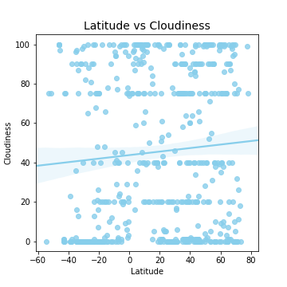

Charts
Temperature
Windspeed
Humidity
Cloudiness
Comparison
Dataset
Data
(current)
Comparison
Latitude vs. Cloudiness
 Clouds are composed of either water droplets or ice crystals depending on the temperature. These molecules are so miniscule in weight and size, they simply remain in the air. These water molecules get into the sky in the first place through the evaporation process where water vapor gasses off of water deposits into the air. Warm air rises into the sky and gradually cools, gradually losing temperature and pressure. However, air loses its ability to hold water as temperature and/or pressure decreases. Therefore, eventually a threshold is reached where the water vapor condenses into water droplets or ice crystals on condensation nuclei (e.g. small particles like dust or pollen) and forms a cloud. Clouds play a critical role in the interplay of weather phenomena as they reflect solar energy back into space, thus helping to regulate the temperature of the Earth. This seaborn scatterplot was used to analyze the relationship between latitude and cloudiness and does seem to suggest a correlation between the two phenomenon. This appears to be in line with findings by the American Meteorological Society that "there is a latitudinal variation in the cloud cover, such that around 20°N there are regions with 0.10 less cloudiness than the global mean. Almost the same variation (0.15 instead of 0.10) is found 20°S." (Wikipedia)